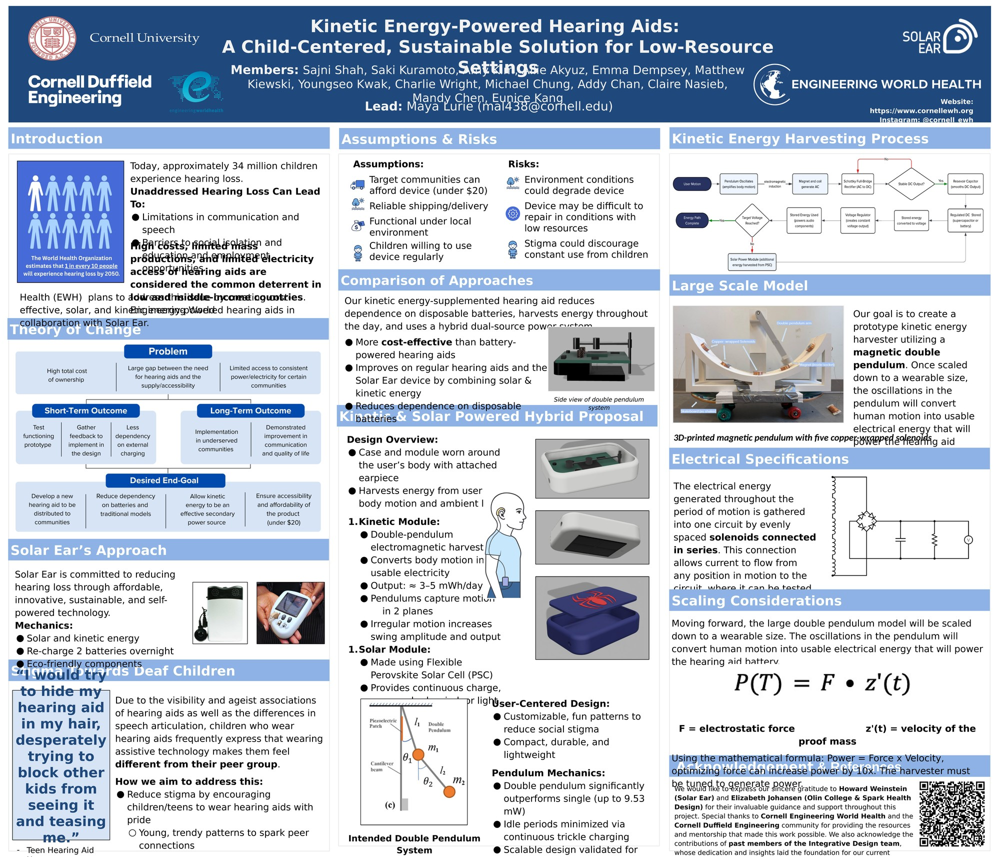
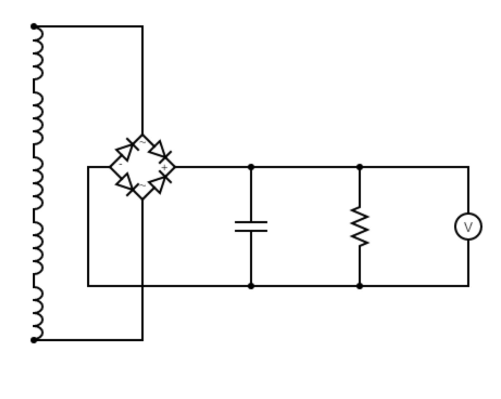
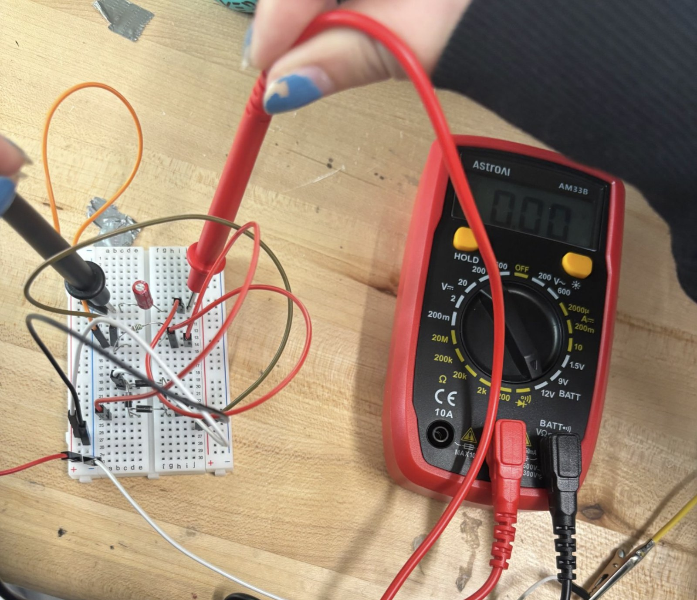
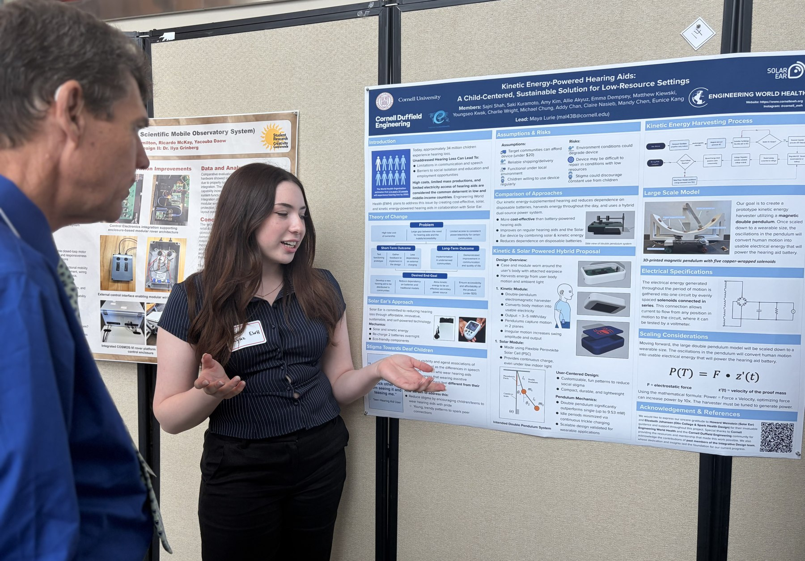

This project is a collaboration between Engineering World Health at Cornell and Solar Ear, focused on a magnetic energy harvesting pendulum for a low-cost, sustainable hearing aid intended for underserved communities. Roughly 34 million children worldwide experience hearing loss, and cost and limited electricity access are two of the biggest barriers to consistent hearing aid use in low and middle income countries. Our team's proposal pairs a kinetic energy harvester with a solar module so the device can recharge throughout the day instead of depending entirely on disposable batteries.
As a member of the Integrative Design subteam, my primary contribution has been circuit design and testing for the energy harvesting side of the system: building out the rectification and voltage regulation circuit that takes the AC signal generated by the double pendulum harvester and converts it into a stable, usable DC output, then testing that circuit on a breadboard with a multimeter to confirm it performs as expected before it's built into the final module. The team's prototype centers on a double pendulum electromagnetic harvester, five copper wrapped solenoids feeding a shared circuit, which in early testing significantly outperformed a single pendulum design. We presented these findings at the ASEE St. Lawrence Research Poster Conference, and the collaboration with Solar Ear is continuing into Fall 2026 to scale the harvester down to a wearable size and refine the prototype further.

assets/img/hearing-aid/poster/poster.jpg" onclick="openLightbox(this.src)">My individual contribution to the collaboration, from schematic to a tested prototype to presenting the results.

The energy harvesting circuit: a full-bridge rectifier and filtering stage feeding a regulated DC output, tested against a voltmeter.

Built out on a breadboard and tested with a multimeter to validate the circuit before committing to a final layout.

Presenting the results at the ASEE St. Lawrence Research Poster Conference.